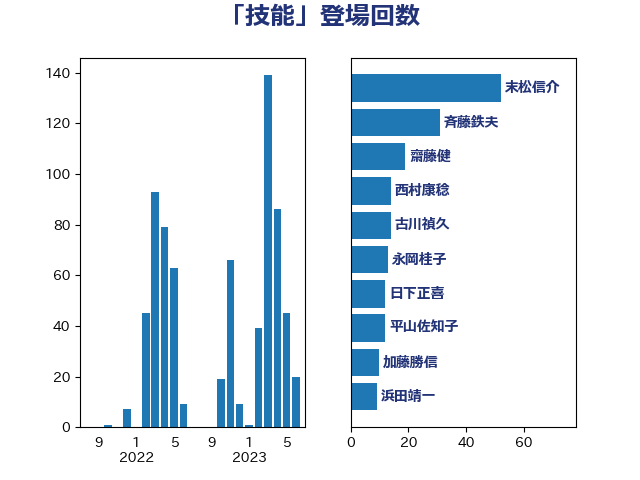

単語「技能」

| 末松信介 | 自由民主党 | 52 回 |
| 斉藤鉄夫 | 公明党 | 31 回 |
| 齋藤健 | 自由民主党 | 19 回 |
| 西村康稔 | 自由民主党 | 14 回 |
| 古川禎久 | 自由民主党 | 14 回 |
| 永岡桂子 | 自由民主党 | 13 回 |
| 日下正喜 | 公明党 | 12 回 |
| 平山佐知子 | 無所属 | 12 回 |
| 加藤勝信 | 自由民主党 | 10 回 |
| 浜田靖一 | 自由民主党 | 9 回 |
| 赤池誠章 | 自由民主党 | 8 回 |
| 岸田文雄 | 自由民主党 | 8 回 |
| 塩川鉄也 | 日本共産党 | 7 回 |
| 山崎正恭 | 公明党 | 6 回 |
| 三浦信祐 | 公明党 | 6 回 |
| 西村智奈美 | 立憲民主党 | 5 回 |
| 漆間譲司 | 日本維新の会 | 5 回 |
| 星北斗 | 自由民主党 | 5 回 |
| 山下芳生 | 日本共産党 | 5 回 |
| 鈴木庸介 | 立憲民主党 | 4 回 |
| 後藤茂之 | 自由民主党 | 4 回 |
| 山下貴司 | 自由民主党 | 4 回 |
| 吉良よし子 | 日本共産党 | 4 回 |
| 門山宏哲 | 自由民主党 | 3 回 |
| 萩生田光一 | 自由民主党 | 3 回 |
| 簗和生 | 自由民主党 | 3 回 |
| 福島伸享 | 無所属 | 3 回 |
| 林芳正 | 自由民主党 | 3 回 |
| 山本剛正 | 日本維新の会 | 3 回 |
| 小林鷹之 | 自由民主党 | 3 回 |
| 加藤鮎子 | 自由民主党 | 3 回 |
| 上田勇 | 公明党 | 3 回 |
| 鰐淵洋子 | 公明党 | 2 回 |
| 青木愛 | 立憲民主党 | 2 回 |
| 鈴木義弘 | 国民民主党 | 2 回 |
| 鈴木俊一 | 自由民主党 | 2 回 |
| 野間健 | 立憲民主党 | 2 回 |
| 野田聖子 | 自由民主党 | 2 回 |
| 葉梨康弘 | 自由民主党 | 2 回 |
| 美延映夫 | 日本維新の会 | 2 回 |
| 緒方林太郎 | 無所属 | 2 回 |
| 米山隆一 | 立憲民主党 | 2 回 |
| 秋野公造 | 公明党 | 2 回 |
| 矢倉克夫 | 公明党 | 2 回 |
| 河西宏一 | 公明党 | 2 回 |
| 沢田良 | 日本維新の会 | 2 回 |
| 森屋宏 | 自由民主党 | 2 回 |
| 柳ヶ瀬裕文 | 日本維新の会 | 2 回 |
| 松本尚 | 自由民主党 | 2 回 |
| 本村伸子 | 日本共産党 | 2 回 |
| 斎藤アレックス | 国民民主党 | 2 回 |
| 川合孝典 | 国民民主党 | 2 回 |
| 岬麻紀 | 日本維新の会 | 2 回 |
| 小熊慎司 | 立憲民主党 | 2 回 |
| 室井邦彦 | 日本維新の会 | 2 回 |
| 守島正 | 日本維新の会 | 2 回 |
| 古庄玄知 | 自由民主党 | 2 回 |
| 加田裕之 | 自由民主党 | 2 回 |
| 佐藤英道 | 公明党 | 2 回 |
| 佐々木さやか | 公明党 | 2 回 |
| 中条きよし | 日本維新の会 | 2 回 |
| 中川正春 | 立憲民主党 | 2 回 |
| 上野通子 | 自由民主党 | 2 回 |
| 上田清司 | 国民民主党 | 2 回 |
| 高見康裕 | 自由民主党 | 1 回 |
| 高良鉄美 | 無所属 | 1 回 |
| 高橋光男 | 公明党 | 1 回 |
| 馬淵澄夫 | 立憲民主党 | 1 回 |
| 長谷川英晴 | 自由民主党 | 1 回 |
| 鈴木貴子 | 自由民主党 | 1 回 |
| 金子道仁 | 日本維新の会 | 1 回 |
| 足立康史 | 日本維新の会 | 1 回 |
| 谷合正明 | 公明党 | 1 回 |
| 若宮健嗣 | 自由民主党 | 1 回 |
| 船橋利実 | 自由民主党 | 1 回 |
| 自見はなこ | 自由民主党 | 1 回 |
| 羽生田俊 | 自由民主党 | 1 回 |
| 窪田哲也 | 公明党 | 1 回 |
| 福重隆浩 | 公明党 | 1 回 |
| 福田昭夫 | 立憲民主党 | 1 回 |
| 神谷宗幣 | 参政党 | 1 回 |
| 石井苗子 | 日本維新の会 | 1 回 |
| 畦元将吾 | 自由民主党 | 1 回 |
| 田中昌史 | 自由民主党 | 1 回 |
| 片山さつき | 自由民主党 | 1 回 |
| 源馬謙太郎 | 立憲民主党 | 1 回 |
| 渡辺周 | 立憲民主党 | 1 回 |
| 浜地雅一 | 公明党 | 1 回 |
| 浅尾慶一郎 | 自由民主党 | 1 回 |
| 津島淳 | 自由民主党 | 1 回 |
| 河野太郎 | 自由民主党 | 1 回 |
| 武部新 | 自由民主党 | 1 回 |
| 櫻井周 | 立憲民主党 | 1 回 |
| 梅村みずほ | 日本維新の会 | 1 回 |
| 柴田巧 | 日本維新の会 | 1 回 |
| 松本剛明 | 自由民主党 | 1 回 |
| 東徹 | 日本維新の会 | 1 回 |
| 村田享子 | 立憲民主党 | 1 回 |
| 杉久武 | 公明党 | 1 回 |
| 早坂敦 | 日本維新の会 | 1 回 |
| 斎藤嘉隆 | 立憲民主党 | 1 回 |
| 岩谷良平 | 日本維新の会 | 1 回 |
| 山田勝彦 | 立憲民主党 | 1 回 |
| 山本香苗 | 公明党 | 1 回 |
| 尾身朝子 | 自由民主党 | 1 回 |
| 小倉將信 | 自由民主党 | 1 回 |
| 宮本岳志 | 日本共産党 | 1 回 |
| 大西健介 | 立憲民主党 | 1 回 |
| 塩崎彰久 | 自由民主党 | 1 回 |
| 堂故茂 | 自由民主党 | 1 回 |
| 堀場幸子 | 日本維新の会 | 1 回 |
| 國重徹 | 公明党 | 1 回 |
| 和田政宗 | 自由民主党 | 1 回 |
| 吉良州司 | 無所属 | 1 回 |
| 吉田統彦 | 立憲民主党 | 1 回 |
| 古川直季 | 自由民主党 | 1 回 |
| 勝部賢志 | 立憲民主党 | 1 回 |
| 勝目康 | 自由民主党 | 1 回 |
| 務台俊介 | 自由民主党 | 1 回 |
| 加藤竜祥 | 自由民主党 | 1 回 |
| 前川清成 | 日本維新の会 | 1 回 |
| 伊藤孝恵 | 国民民主党 | 1 回 |
| 伊佐進一 | 公明党 | 1 回 |
| 井野俊郎 | 自由民主党 | 1 回 |
| 井上貴博 | 自由民主党 | 1 回 |
| 中野洋昌 | 公明党 | 1 回 |
| 中谷一馬 | 立憲民主党 | 1 回 |
| 中川宏昌 | 公明党 | 1 回 |
| こやり隆史 | 自由民主党 | 1 回 |